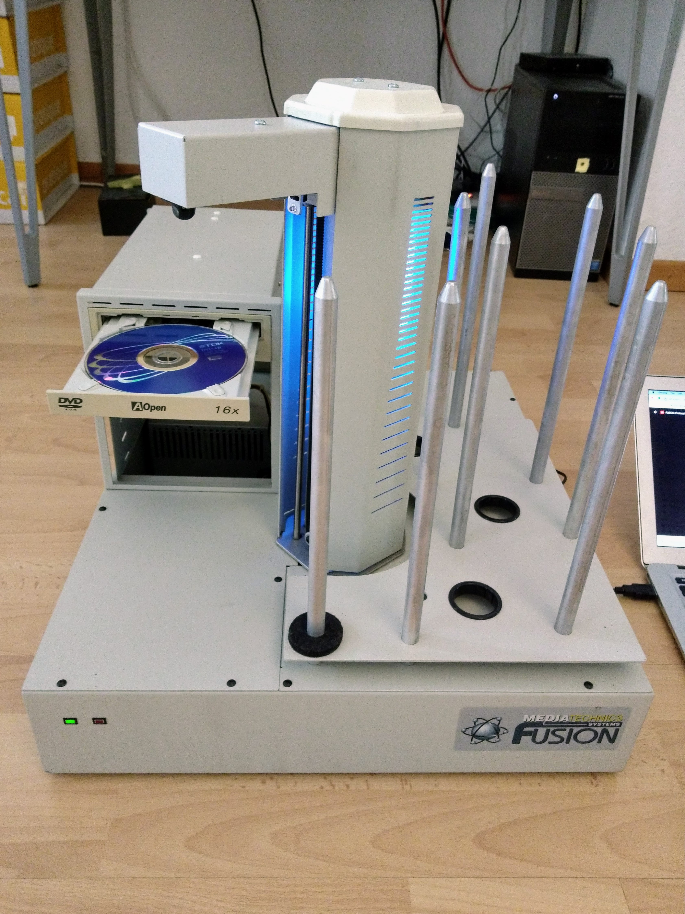
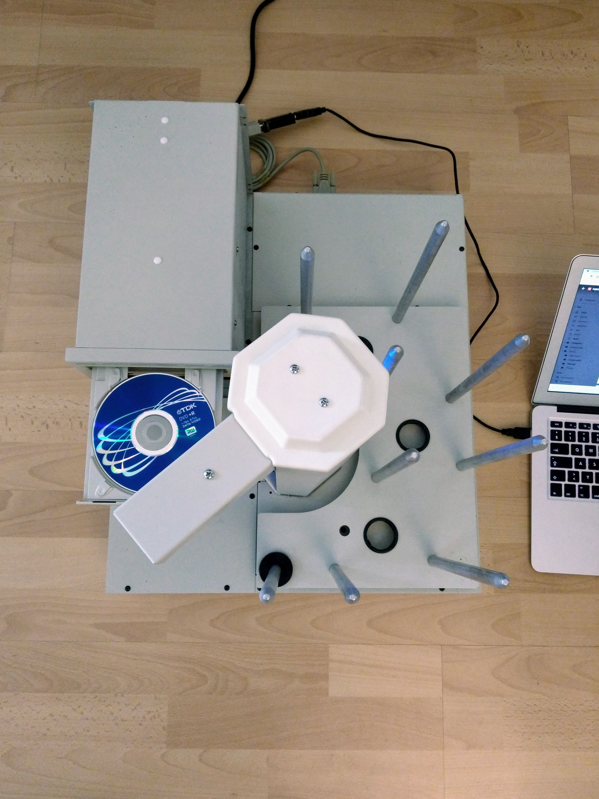

DVD duplicator to give away
If you are based in or around Zurich and would like this DVD duplicator then please email me at:
dvd-duplicator@beta-engine.net
It cost around Fr. 3000 new but you can have it for free. However, you have to collect it - it weighs about 30kg and I will not mail it out.
Here's a short video of it in action:
If it sounds like it's making more noise than it should, it is. There's a cable guide in the central tower that's not doing its job properly and cables are scrapping against it as the arm moves up and down - it consists of two long rectangular pieces cut from a sheet of plastic, i.e. it's not molded or anything complex and should be easy to replace.
It's being controlled via the serial link to the Mac sitting beside it. I haven't got it fully set up, it should contain four DVD writers in the tower to the left - at the moment it only has one. The controlling computer should write to the DVD, eject the drive tray and tell the duplicator to remove the disk, moving it to the output pile. There are two other piles, an input pile and a reject pile. After moving a disk to the output pile, the duplicator would then take one from a stack of blanks in the input pile and place it in the tray from which it just removed a disk. If anything went wrong during the process of writing the disk the controlling computer would ask the duplicator to move the resulting disk to the reject pile rather than the output pile.
Even if you don't want the duplicator, it's full of interesting parts, including:
- The motors that turn the center tower and raise and lower its arm.
- The sensors that allow it to detect which of the four drive trays is open.
Here's a front view:
And a top view:
I originally bought it with the intention not of duplicating DVDs but of ripping CDs as a commercial service. This was back when people still had significant collections of CDs that they might want digitised. At this stage, though, most people's CD collections are more decorative than anything else, so I doubt there'd be any demand for such a service anymore.
USB to serial
It comes with a USB to serial adapter. This adapter does not require any additional drivers on Linux or Mac. I haven't used it with a Windows machine so can't comment on that. However, if you do need a driver you can find them here (the adatper is made by Digitus).
Documentation
There's not much documentation to go with this device - all the information I needed to work with it (including the simple serial protocol) is in this PDF - FUSION-Protocol_i.pdf. I also received this HTML file - copypro.html - from the manufacturer but I never used any information in it (and to be honest, I suspect it may be the protocol details for a completely different device).
The commands documented in FUSION-Protocol_i.pdf are actually macros. The set of macros that the device currently has (and which are unchanged from those it shipped with) can be found in macros.txt. I'm afraid that I have no details about the underlying macro language.